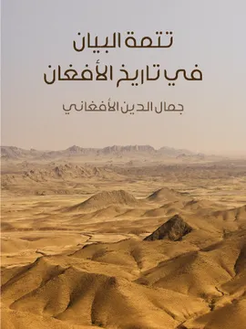

تتمة البيان في تاريخ الأفغان

قراءة عربية أصلية محددة النطاق في الصفحات 9 إلى 14 من ملف PDF المرتبط، وليست تلخيصا كاملا للكتاب. نناقش ما تدعمه هذه المقاطع فقط.
اسم الأمة الأفغانية
يذكر الفصل أن الفارسيين يسمونهم أفغان، ويعللون ذلك بأنهم حين أسرهم بخت نصر كان لهم أنين وحنين، والأنين يسمى بالفارسية أفغان. ويذكر قولًا آخر أن أفغان اسم حفيد شاءول جد الأفغانيين فسموا باسم جدهم. ثم يقول إن عوام الفرس يسمونهم أوغان، وإن الهنود يسمونهم بتان، وإن بعض القبائل كأهل قندهار وغزنة يسمون أنفسهم پشتو وپشتان، وإن هذه الألفاظ المتقاربة من أصل واحد في رأيه.
زاوية وحدود القراءة
قراءة موجزة من ص ٩ إلى ص ١٤ من أصل ٨٢ صفحة، تعرض الفصل الأول في اسم الأمة الأفغانية، لا الكتاب كاملًا.
الطبعة والقراءة
هذه النسخة من الكتاب صادرة ومتاحة مجانًا من مؤسسة هنداوي بشكل قانوني؛ حيث إن نص الكتاب يقع في نطاق الملكية العامة تبعًا لقوانين الملكية الفكرية. وبحسب ملف الناشر، تصميم الكتاب والغلاف مرخصان برخصة المشاع الإبداعي: نسب المصنف 4.0.
تنزيل PDF المجاني ↓ القراءة والمصدر الرسمي ↗